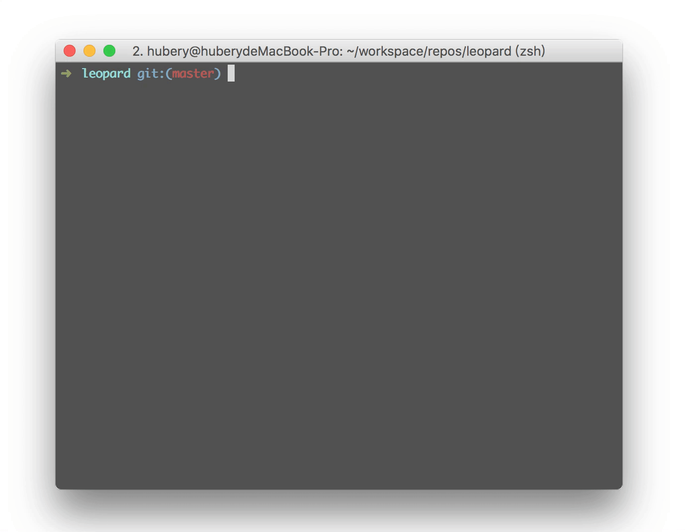

Introduction
You could use catalog or just ctl to list the npm scripts and gradually get familiar with the new project you've just cloned from GitHub.
Or, you could just use catalog to manage your npm scripts and run them automatically. It's quite convenient indeed.

Installation
$ npm install npm-scripts-catalog -g
$ cd someRepos
$ catalog